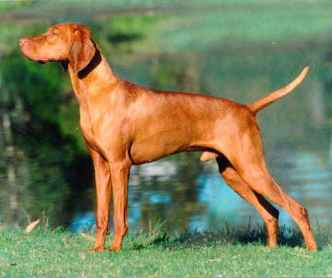

|  |
|
|
Régi magyar vadászkutya, amely több fajta keresztezéséből alakult ki. Már honfoglaló őseink mellett, akik szenvedélyes vadászok voltak, feltűnt egy vadászkutya, amely követte őket a vándorlások során a Kárpát-medencébe. Sárga, esetleg barna színű, néha foltos volt, s a vadászat minden mozzanatánál segítségére volt a vadásznak. Ez a mára kihalt kopó volt a mai magyar vizsla őse. Legkorábbi ábrázolása a 1100 és 1120 között készült Codex Albensisben található, de a Képes krónikában is felbukkan a „kajtárkodó kopó” képe. Hunor és Magor találkozása a csodaszarvassal című képen négy jól felismerhető vizsla látható. A vizsla említésével nemeseink levelezésében is gyakran találkozhatunk. A török hódoltság korában megjelent hazánkban a törökök sárga vadászkutyája a sloughi, amely kereszteződött az itt élő vadászkutyákkal és kialakult vizslánk alaptípusa. Az 1731-ből származó adat szerint a trencséni Zay család kezdett először foglalkozni a tenyésztésével, és valószínű, hogy egy Angliából származó spanyol vizslát is bevontak a tenyésztésbe. Ekkor még a vizsla gesztenyebarna színben vagy fehér jegyekkel is létezett. A 19. század végén megritkult az állomány, ekkor vonták be a tenyésztésbe a pointert és a német rövidszőrű vizslát. 1920-ban megkezdték a fajta törzskönyvezését, 1928-ban elkészült a fajtaleírás (standard), és 1935-ben az FCI bejegyezte a hivatalosan elismert fajták közé. A II. világháború után a veszteségeket pótlandó a gödöllői tenyésztelepen indult újra a tenyésztése. Ma már nem tartozik a veszélyeztetett fajták közé, hiszen a világon az egyik legismertebb magyar fajta, amelynek jelentős állományai vannak Nyugat-Európában és az Egyesült Államokban. Tiszta vérűként viszonylag rövid ideje , mintegy 80 éve tenyésztik. |
|